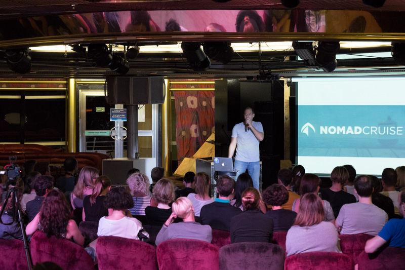

Captain's Cocktail
Recommended dress code:
The suggested dress code for this evening is Gala.
The Master, Captain Amadeu Albuquerque, cordially invites you to his cocktail where he will present his Senior Officers and Head of Departments. Also you will have the opportunity to take the traditional photo with him. Broadway Lounge, Deck 5.
Important
Information for smokers
Smoking is strictly prohibited in the cabin, on the balcony, inside the shop including the elevators and during refueling of the ship (announced via the ship's public address system). The designated smoking areas are on the open decks. Please take precautions to minimize the risk of fire and use the ashtrays.
Excursions
The Shorex Excursion desk is open from 10:00 – 12:00 and 18:00 – 20:00.
Cooking demonstration
At 11:30, the international cooking demonstration with our executive chef will take place at the Atrium, Decks 3 and 4.
Nomadcruise conference
Yesterday night, the first part of the Nomadcruise conference took place. The speakers were Johannes Voelkner, Björn Uhss, Ronald Kandelhard and Chris Senior. Especially the latter really caught the crowd's attention with his life story. 
Weather forecast
| Sunrise | 07:31 |
| Sunset | 18:25 |
| Minimum temperature | 19° C |
| Maximum temperature | 22° C |
| Conditions | Overcast skies |